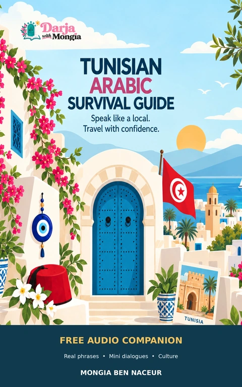

✦ The Darja learning collection
The Darja Shop.
Books, audio and learning resources to bring Tunisian Arabic into your everyday life.
عسلامةassléma · hello
Explore the shop
Books
Begin with practical phrases for your trip to Tunisia.

A little Darja for your trip
Practical Tunisian Arabic for your trip. Get the digital PDF guide with downloadable audio, or explore the free preview.
Now €5.99 €10.00 Save €4.01
About the book
Tunisian Arabic Survival Guide
By Mongia Ben Naceur · Arabic teacher
Practical Tunisian Arabic for your trip to Tunisia. Learn useful expressions for greetings, transport, cafés, restaurants, shopping and getting help—with Arabic script, Latin pronunciation and English meanings.
Follow short conversations, discover cultural tips, and listen to the companion audio at your own pace. You can start even if you cannot read Arabic.
What you will find inside
- Greetings, politeness and asking someone to repeat
- Numbers, prices, money and paying
- The airport, taxis, louages, trains and directions
- Accommodation, cafés and restaurants
- Local markets, souks and bargaining
- Museums, excursions, meeting people and getting help
Try three phrases from the guide
سامحنيSama7niSorry / excuse me
بقدّاش؟B9addech?How much?
ما فهمتشMa fhemtchI did not understand
Questions about the guide
Do I need to read Arabic?
No. The phrases include Latin pronunciation and English meanings. Use the companion audio to listen and repeat.
What format is the book?
It is a digital PDF guide with companion audio. Use the Payhip purchase page to see the current offer.
Can I look inside before buying?
Yes. The free preview contains ten watermarked sample pages, including the contents, first phrases and a complete souk lesson.
How do I find the matching audio?
Match the AUDIO label in the book to the recording. Chapter tracks use .1 for Useful Expressions, .2 for Conversation and .3 for You Might Hear. You can listen online or download the recordings.
For book owners · free companion recordings
Read it. Hear it. Speak it.
Find every matching recording below. Search the 85 tracks, listen online, download individual files or save the complete ZIP. No sign-up needed.
Match the AUDIO label in your book to a recording. The collection includes the starting phrases, chapters 01–22, quick references and Tunisia in pictures.
Open the full audio library in a new page →